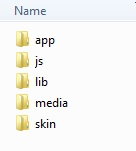
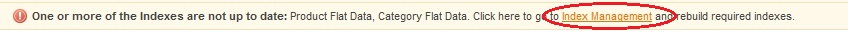
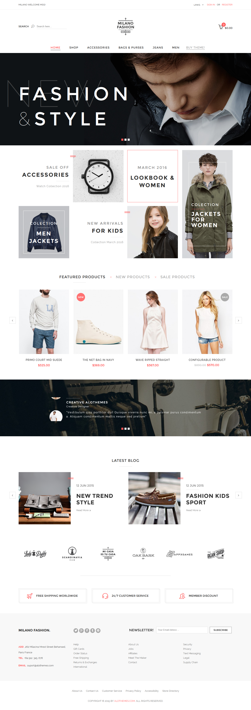

Milano ALO Themes
Responsive Magento Theme Document
- Created: 06/01/2015
- Latest update: 06/01/2015
- By: ALO Themes
- Ticket Support: http://alothemes.com/ticket
- Video Tutorial: Youtube
- Custom Job: contact via Skype: nguyendong.st
I - Installation
1 - Prepare your Magento
- It is recommended to install the theme on a test server before you install it in a live store.
- Backup Magento files and the store database. Important: Creating backup before installation of any theme store extensions in Magento is extremely important,especially when are working on a live store.
- Disable Compilation Mode in System >Tools > Compilation.
-
Disable:
- Magento Cache (refer to 4.1.2 Disable Cache For Details)
- Full page cache and caching module for Magento (such as Speedster)
-
Any Additional cache on your server,PHP cache engines,APC,etc.
Important: When developing your Magento store, in order to be able to see changes immediately, you should completely disable the cache.You can enable it after you finish configuring your store. - Remove all possible custom modifications of the Magento “base” theme. "alomilano"(same as any Magento theme) relieson “base” theme,so any modifications of the “base” theme can change the default behavior of alomilano and break some functionality.You should never edit“base” theme's files.
- Log out from Magento admin panel. Do not just close the browser window: you need to click Log Out link to refresh the access control system.
2 - Install
There are two ways to install a Magento Theme:
- Install quickstart: By using this package, you will set the theme exactly as our Demo with sample data.
- Install only template: If you exist a magento website you can install only template.
2.1 Install quickstart
Please following steps below:
Step 1: Create new database and import database sample (database.sql or database.sql.gz) in database folder.
- Open your Browse and type : localhost/phpmyadmin
- Then create database-Click database you have created
Step 2:Upload the whole Quickstart package (app, js, skin … in alo_milano_quickstart_1.0 folder ) to your server.
alo_milano_quickstart_1.0, we got:
Copy all of folder above to your Magento .
Step 3: Open browser and navigate to your site (where the quickstart uploaded) to load default Magento installer with the database you just created and import database sample.
As an example, name of magento is magento.
Click button “Continue”.
Step 4: Step by step to follow the instructions.
Click “Continue”. We got:
- With database name : magento – database name you have just created
- User name : root
- User password : No need to fill in.
Click “Continue” button.
- Fill
Personal information : First Name, Las Name, Email
Login Information: Username, Password, Confirm Password
-Click “Continue” button
Step 5: Finish installer.
Step 6: You can “Go to frontend” to go to Home page.
(Important note ( at step 3 of installation - Configuration page) )
Step 7: Disable cache
Ø Login your magento admin
Ø Clear all cache ( System > Cache management > Disabled all cache )
After cache is disabled cache management screen might look like this:
Step 8: Reindex data
Go to System IndexManagement.To rebuild you reindexes, selec tall,select Reindex Dataand click Submit button
2.2 install template
If you exist a magento website you can install only template.
1. You use theme in folder theme_1.0 upload the folders ( app, skin, js, media ...) from the theme package to the root directory ( www, public_html) of your magento software using an FTP client.
Example: open folder: theme_1.0
We got:

Copy all app, js, lib, media, skin above to your Magento.
2. Please go to Magento Admin: Admin > Magiccart> Magicinstall > Magic Setup >Setup
3. Choose Scope Store active theme (or use default active theme for all store) and Choose theme then click submit button
4. Clear all cache ( System > Cache management > Disabled all cache )
After cache is disabled cache management screen might look like this:
2.3. Problems after installation.
If you encounter any problems after installation: flush Magento cache, log out from the admin panel, and log in again.Check again the installation steps and make sure you didn't omit any step. What can cause problems:
If you see bug: Column not found: 1054 Unknown column 'main_table.magic_label' in 'field list'. You need go to Admin Cpanel > System > Configuration > Catalog:
In 2 field "Use Flat Catalog Category" and "Use Flat Catalog Product" choose No and then "Save Config"
After You choose again Yes for 2 field this and "Save Config" magento will show message as image below

You click to link Index Management will go to table below after choose Sellect all and reindex wait finished and try refesh site:
a) Magento cache (or external cache) was not flushed after installation of the theme.
b) Compilation mode was not disabled before installation.
c) Some of the theme files were not uploaded.
d) File permissions issue
e) You have some third-party extensions which change/break theme's default behavior or cause some conflicts.
f) You edited theme files and accidentally removed or changed something in the files.
g) You have customized the theme by creating custom sub-theme and your modifications change/break the default behavior of the theme
h) You have some elements that left from your previous theme (e.g.in Magento's"base" theme in app/design/frontend/base/) and that changes/breaks the default be haviorof the theme.
Also check your log files invar/log/(log settings shouldbe enabled in the admin panel:System >Configuration>Developerfor more information about possible errors.
II - Magento configuration
The following chapter describes some of the basic Magento settings and features. Please note that as authors of this theme we provide support only for the issues related strictly to the theme. Support for Magento configuration/ installation/ maintenance etc. is beyond the scope of our support. This chapter should be only treated as a starting point, more information about Magento can be found in Magento documentation : 1.1.2 Magento help
1 - Caching system
When developing your Magento store,you want to see the changes you have implemented. Inorder tobe ableto see changes immediately, you should completely disable the cache.Youcan enable it after you finish configuring your store.
If the cache is enabled, always refresh the cache after making changes in the store/theme/extension configuration.
To access the cache management screen, go to System >Cache Management.
1.1 Flush cache
Go to System >Cache Management.Click the following buttons to completely clear the store cache:
Step1. Flush Magento Cache
Step2. Flush Cache Storage
Step3. Flush Catalog Images Cache
Step4. Flush JavaScript/CSSCache
1.2 Disable cache
Go to System >Cache Management. Click Select All link,select Disable in Actions field and click Submit button:
-
After cache is disabled cache management screen might look like this:
1.3 Enable cache
When the store is configured, you can enable caching system again.Go to System > Cache Management. Click Select All link, select Enable in Actions field and click Submit button:
1.4 Refresh cache
If the cache is enabled, after each configuration change, extension installation, upgrade or uninstallation always refresh the cache.To do this, go to System >Cache Management. Click SelectAll link, select Refresh in Actions field and click Submit button:
2 - Index management
Magento indexes most of its data in order to access it faster.If You make changes to your store such as editing products, adding categories, changing urls, etc. you will need to reindex the data so that the changes can show up on your frontend.
To access the index management screen,go to System > Index Management.To rebuild your indexes, select all,select Reindex Data and click Submit button.
3 - How to enable the theme
In Magento you can enable the theme on many levels.You can set one theme for the entire store,but can also set different themes for different parts ofthe store (even for selected categories, products or CMS pages).
If you want all your store pages to look the same (to use the same theme), your theme should only be enabled in System >Configuration >Design(the same as it was described in the installation steps3. Installation).You need to remove all theme over rides from categories, products and CMS pages.
There are many places where a theme can be enabled. If you have just installed a fresh copy of Magento, those places will be empty. Other wise, please take a look at these sections of the admin panel:
• System >Design
This section should beempty,deleteall existing entries:
These fields should be left empty, do not select any theme here:
- Catalog >Manage Categories> [category]> Custom Design >Custom Design
- Catalog >Manage Products> [product] > Design > Custom Design
- CMS >Pages >[page]> Design > Custom Theme
Leave--Please Select--in thesefields,like on the following screenshot:
Remember to flush the cache after you change design settings.
4 - Logo
- Upload your logo to skin/frontend/alomilano/default/images/.
- By default Magento theme displays logo from the file name logo.jpg. If you up loaded file with different name or different file format(e.g..png or.jpg)
- Login your Magento Admin
- go to System > Configuration > Design > Header section and in the Logo Image Src field specify a path to your logo image
5 - Categories
Note:
More info about categories in Magento can be found in :
http://www.magentocommerce.com/knowledge-base/entry/tutorial-creating-and-managing-categories
To create and edit categories in Magento, navigate to Catalog > Manage Categories
Categories section of the admin panel. After installation of Magento your category tree is almost empty, there is only the root category (name Default Category):
The root category is not displayed in the frontend of the store –that's why your main menu is empty just after is talling Magento.You need to add some new top-level categories (also called subcategories because they are descendants of the root category).
Important:
All categories have to be descendants of the root category. Do not add categories outside of the root category tree.
To add a new category,select the root category by clicking on itand click Add
Subcategory button:
Fill inall the required fields. Especialy set Is Active and Include in Navigation Menu fields to Yes, and click Save Category:
This will create a new category (which will be displayed as a top-level category in the main menu on frontend):
Note: that this new category has to be a descendant of the root category– it has tobe one level lower than the root category:
If the category is not displayed in the frontend:reindex the data in System > Index
Management and flush Magento cache.
5.1 Category info
For each category you can add some basic information which will be displaye don category page (above the products).Navigateto Manage Categories and select a category:
- Description - category description.Youcan enter textor HTML.
- Image – main category image. After image is uploaded and saved,an icon of the existing image will appear to the left of the button,and a Delete Image checkbox will appear tothe right.
5.2 Landing pages
You can show your customers a landing page instead of the standard product listing page when they select the category. You can do so by enabling static block on your category page.Navigate to Catalog >Manage Categories, select a category, open Display Settings tab and select appropriate valuein the Display Mode field.In the CMS Block drop-down, select which block you would like to display on category page. The list will include all existing static blocks.
5.3 Depth of the menu
In the main menu you can limit number of displayed cetegory levels. To do that, go to System >Configuration >Catalog and specify the dep thin Maximal Depth field. For example, if you want to display only three levels of categories, enter 3 in Maximal Depthfield and save the configuration.From now on,only three levels of categories will be dis played in the main menu.
5.4 Categories in Layered Navigation ("ShopBy")
You can display categories in Magento's Layered Navigation block ("Shop by"block) at the top of the left sidebar in category view.To display selected category in the Layered Navigation, go to Catalog > ManageCategories, click selected category and set Is Anchor field(in Display Settings tab) to Yes:

From now on this category will be displayed in the Layered Navigation.If the category is not displayed in the frontend: reindex the data in System > Index Management and refresh Magento cache.
6 - Products
6.1 Options box
For products which have options (like configurable productsor bundle products) you can change position of the options box on product page. It can be displayed in the main column(next to the product images),or in the column below images.Select a product in Catalog >Manage Products,open Designtaband select position in Display Product Options Infield:

6.2 “Only X left” indicator
There is a quantity indicator displayed on the product page.It shows the quantity of items left in stock if the stock level is equal or below the threshold specified in the admin panel. The threshold can be set in Only X left Threshold field in System >Configuration >Inventory.
For example, if you set the option to 20,all products with quantity equal or
less than 20 will have the text Only X left on the product page.
For configurable products this text is click able and shows drop-downbox with quantities of all products associated with that product.
7 - Attributes
An attribute in Magento is defined as any property of a product,such as color,price,SKU, manufacturer, etc.There are two types of attributes: System Attributes (cannot bedeleted and every product must contain them) and Simple Attributes(which can be created by the store admin).Attributes are groupped in AttributeSets. Here youcan find more info about Magento attributes: http://www.magentocommerce.com/wiki/welcome_to_the_magento_user_s_guide/chapter_3#attributes
7.1 Attribute management
To edit existing attributes, go to Catalog >Attributes>Manage Attributes and select an attribute from the list.To create a new attribute,click Add New Attribute button.There are many types of attributes which you can create,one of the most useful is a dropdown attribute which lets you define a list of values that will be available when creating new products.
Important:
After making any changes in the attributes and AttributeSets,you may need to reindex the data in your Magento (3.2 Index management)and flush the cache (3.1 Caching system).
Let's see an example of a dropdown attribute manufacturer which stores a list of product brands.Fill in the form as follows:


After you create the attribute, you need to add it to the Attribute Set which you use for your products.Attribute Sets are described in the next chapter.
3.7.2 Attribute sets
An Attribute Set is a collection of attributes, created to fit certain types of products. To add a new product in Magento you need to select an AttributeSet which will describe that product. You can create many custom Attribute Sets for different types of products.For example, if you sell t-shirtsand books,you could create 2 AttributeSets:one specific to t-shirts,one specific to books.The Attribute Set for t-shirts can include attributes such as color and size (which are not needed in the AttributeSet for books).
Important:
After making any changes in the attributes and AttributeSets, you may need to reindex the data in your Magento (3.2 Index management)and flush the cache (3.1 Cachingsystem).
Let's continue an example with manufacturer attribute. To add your attribute toan AttributeSet,go to Catalog>Attributes >Manage Attribute Sets,select an Attribute Set (default one is named Default). You will see Unassigned Attributes section with a list of available attributes.You can associate attributes to your Attribute Set by clicking and drag in an attribute in to the Groups section.To disassociate an attribute,simply drag it back to the Unassigned Attributes list.

Click Save Attribute Set button after you finish. You can add your custom attributes to many AttributeSets.< Then,go to Catalog >Manage Products and open a product.If the product is based on the Attribute Set which contain your manufacturer attribute, you will see a list of manufacturers which may look like this:

If you added manufacturer attribute to that AttributeSet, but you don't see the field with the list of manufacturers, you may need to reindex the data in your Magento and flush the cache.
8 - Content Management System (CMS)
8.1 WYSIWYG editor
WYSIWYG(What You See Is What You Get) editor is a convenient way to add content to pages and static blocks in Magento.
Important:
WYSIWYG should only be used to edit text, never use it to edit HTML. Remember to always turn off WYSIWYG editor when you want to edit HTML or Magento's CMS tags in the page/block content.Otherwise WYSIWYG editor can break your content.
Infact the best way to useWYSIWYG is to turn it on only when it is needed. Go to
System >Configuration >Content Management and set it as Disabled by Default.
After that, if needed, WYSIWYG can always be turned on with Show/Hide Editor button above the page/block content field:

8.2 Static blocks
Static blocks in Magento are simple portions of content that can be displayed throughout the site. To manage static blocks, go to CMS >Static Blocks section in the admin panel.
To create a static block,go to CMS > Static Blocks,click Add New Block button and follow these steps:
- In Identifier field enter an identifier of one of the static blocks. Make sure the identifier is lower-case and separated by underscores to follow Magento’s standards
- Enter the title in Block Title
- Select the Store View to which this block will apply.
- Select Enabled in the Status field. Disabled means that the block is not displayed in the frontend.
- Insert your Content(it can be textor HTML )and click Save Block. Here’s an example:

For more details on creating static blocks please refer to Magento user guide: static blocks.
8.3 CMS markup tags
There are some special mark up tags– a bits of text surrounded by double curly braces– which have a special meaning in Magento.You can use those tags either in static blocks or CMS pages.
For example,this tag:
{{storeurl=''”}}
will be replaced with the store’s base URL.
It might be useful when you want to display a link on one of your pages.You can use this tag to dynamically build all of your links (you don't need to hard-code any links).Thanks to that you will not need tore build your links after you move your store to a new domain.
For example, if your store domain is www.example.com, the following tag placed in the page content:
{{storeurl='path/to/page/about-us'}}
will be replaced with this URL:
http://www.example.com/path/to/page/about-us/
For more information, please refer to this article, where you can find a comprehensive list of available tags: CMS markup tags
9 - Translation / Localization
Interface translation
This theme introduces a few additional interface character strings.
For example “Special Price” label is replaced with shorter “Now only” label. Strings are located in app/design/frontend/alomilano/default/locale/en_US/translate.csv. This file can be used to translate the interface into other languages.
Example:
To translate the interface into Spanish follow these in structions:
- Createa new folder for your translation.For Spanish language it will be app/design/frontend/default/alomilano/locale/es_ES.
- Copy translate.csv from app/design/frontend/alomilano/default/locale/en_ES.
And paste it into created folder app/design/frontend/alomilano/default/locale/es_ES. - Open app/design/frontend /alomilano/default/locale/es_ES/translate.csv in Open Office Calc(or other text editor like Notepad++, PSPad).
Note: The editor should be capable to save file in UTF-8 encoding. Do not use Excel, it can break file structure. Read more about useful tools:
http://www.magentocommerce.com/wiki/groups/166/useful_tools_to_work_w%20ith_translations - If you open translate.csv in Open Office Calc it might look like this:
The first column contains the original character strings.It should be left intact.In the second column you can place your translation ofeach string. - Some strings contains%dor%sentries.These entries should be left intact in the translated strings.
III - Alothemes customization
Please note that Magento theme customization is far beyond the scope of this user guide. This chapter is only for informational purposes, you should treat it as a starting point. Before you start to customize the theme you need to be sure that you know what you're doing.
Magento is based on a theming concept referred to as parent / child theming – changes in the theme can be implemented without modifying the original. Magento “base” theme serves as a parent theme for a custom theme.
The correct way to customize the theme in Magento is to create your own sub-theme of the default theme in the design package.You should never editor original design package files.Files That Need To be changed can be copied from the default theme of the design package to your custom sub-theme inside that package.
This way can over ride any file of the design package. And you can be sure that when something goes wrong you can simply delete your custom sub-theme without breaking the original files.
1 - Design packages
Themes in Magento are grouped together into design packages(in earlier versions called interfaces).By default Magento Community Edition has two packages named"base" and "default".
Note: Do not edit files in the "base" package and do not create customsub-themes inside the "base" package.
Every design package in Magento comes with a default theme named "default" which is the main theme in the design package.When administrator assigns a package to the store, Magento automatically looks for the theme named "default" in that package.
Design package can also contain variations of the"default" theme. This variations are often called sub-themes because they inherit all the files from the "default" theme (from the same package) and from the "base" package. Inside the sub-theme you can over ride any file of the "default" theme. Sub-theme can even consists of a single file– other files will be inherited from the "default" theme from the package.This is called a fallback mechanism because Magento Always falls back to the next theme in the hierarchy to find the requested file.Fallback is described later in this chapter.
2 - Theme structure
Magento themes consists of many files like HTML templates,CSS stylesheets,images, etc. All files are split between two directories:
- app/design/frontend/default/theme_name/ Templates directory– contains the layout files, HTML templates and translations
-
skin/frontend/default/theme_name/
Skin directory– contains CSS stylesheets, images and theme-specific JavaScript files
where theme_name indicates the theme name.
Template files are organized as follows:
- layout– directory contains XML files which define page structure
- template– directory contains template files (.phtml),a mix of HTML and PHP
- locale– directory contains CSV files with translation strings
Skin files are organized as follows:
- css– directory contains CSS files
- images– directory contains images
- js– directory contains theme-specific JavaScript files
3 - Fallback mechanism
Understanding fallback mechanismis very important when you want to customize the theme,solet's see a simple example.
Let's say we have a design package named "hello world" with custom sub-themenamed "new". Package files are organized as follows:
- app/design/frontend/helloworld/new/
- skin/frontend/helloworld/new/
Let's also assume that your custom sub-theme contains a CSS file called "menu.css" located in skin/frontend/helloworld/new/css/menu.css
If your custom theme requests "menu.css" but Magento can't find it in your custom sub- theme in skin/frontend/helloworld/new/css/menu.css, Magento will try to find that file in the next theme in the hierarchy. Next theme in the hierarchy is the "default" theme in "helloworld" package so Magento will search in skin/frontend/helloworld/default/css/menu.css.
If the file is not there, Magento will continue until it locates the file. Next theme The hierarchy is the "default" theme in "base"package:
skin/frontend/base/default/css/menu.css. The "default" theme in the "base" package is the final fallback point in the hierarchy.
Let's take a look again at the entire fallback hierarchy:
- Look for the requested file in custom sub-theme: skin/frontend/helloworld/new/
- If not found, look for the file in the "default" theme in the design package: skin/frontend/helloworld/default/
- If not found, look for the file in the "default" theme in "base" design package: skin/frontend/base/default/
The first theme in hierarchy the theme that assign through the admin panel (in System >Configuration >Design).The last theme hierarchy is the "default" theme in "base" design package.
Thanks to the fallback mechanism there is no need to copy all the default theme files to your custom sub-theme when you want to make some changes your theme. You Only copy over the files that you want to edit. Other files will be inherited from the "default" theme in the package and from the "base" package.
The most important advantages of the fallback mechanism:
- Selected Functionality Can Be shared between many themes
- Less code to maintain
- Custom themes are updated-proof:you don't edit original files,so your changes are not overwritten after theme updated
4 - Summary
Themes in Magento are grouped together into design packages.
- By default Magento comes with the package named "base" which contains all the files that control Magento's default behavior.
- Every design package in Magento comes with a default theme named "default" which is the main theme of the design package.
- Design package can contain variations (sub-themes) of the "default" theme.They inheritall the files from the "default" theme (from the same package)and from the "base" package.
- The correct way to customize the theme in Magento Is to create your own sub- theme. You Should never edit original design package files. Files that need To be changed can be copied to your custom sub-theme.
- This way you can override any file of any design package. And you can be sure that when some thing goes wrong you can simply delete your custom sub- theme without breaking the original files.
- Magento use fallback mechanism to make custom themes easier to maintain and upgrade-proof.
- The first theme in the fallback hierarchy is the theme that assign through the adminpanel(in System >Configuration >Design).The last theme in hierarchy is the "default" theme in "base" design package.
- If the requested file is not found in your custom sub-theme, Magento will try to find that file in the "default" theme from the package. If the file is not found, Magento will call the file from the "base" package.
- The directory structure inside the sub-theme must replicate the directory structure of the default theme.
THEME FEATURES AND ELEMENTS
In this chapter you can find description and configuration details of selected elements of this theme, such as home page, built-instatic blocks, CSS classes etc.
Note:
This list of all settings available in the System > Configuration section of the admin panel can be found in the next chapters.
1 - Home page
- Positions all block static (Admin > CMS > Static Block ) and Modules ( Admin > Magiccart ) in homepage.

After the theme is installed, you can import sample versions of the home page.
To manage pages in Magento, go to CMS > Pages section. By default in Magento a page with URL Key home is displayed as the store’s home page. One of a few sample home pages which you can import, has the following URL key: look-home-page. So to display that page as a home page in your store, you need to change its URL key to simple home.
Note: If the page with that URL key already exists (which is true in most of Magento installations) you will need to delete existing page or change its url key. Alternatively you can indicate which CMS page you want to use as your home page. To do that, go to System > Configuration > General > Web > Default Pages tab and select the desired page in the CMS Home Page field.
- Home page layout
For every CMS page in Magento you can select page layout-the number of columns: one, two,or three columns. To change the layout of the home page, goto CMS >Pages, select the page,select one of the options in the Layout field and click Save Page button: - Home page content
To edit the content of the homepage,go to CMS >Pages and open the active homepage. Content can be found in the main field ofthe Content tab:
Important
Always turn off WYSIWYG editor when you want to edit HTML or Magento's CMS tags in the page/block content.Otherwise WYSIWYG editor will break the content. Refer to 3.8.1 WYSIWYG editor for more details.
2 - Products Grid page

3 - Products list page

4 - Product view

5 - Widget
5.1 Use Widget in page or static block
Widgets are the most exciting features in the magento. You can use that to display different content block within your page, such as Latest Products/New Products/Best Seller Products or any CMS Static Block.
widget icon in CMS page or in static block:

While you double click to widget it will show option of widget
Example with Magicslider Widgets:
Our extensions in theme based on the widget it is inserted into the page or static block. If you want to change the configuration you can find it in the page or static block and change it.
We have add the widget in our theme as Facebook Fanbox Widgets, Latesttweet Widgets, Magicbrand Widgets, Magiccategory Widgets, Magicproduct Widgets, Magicslider Widgets, Testimonial Widgets

6 - Extension in template
1 Magicmenu
1.1 Look in frontend
1.1 Look in frontend
1.1.1 Type Mega menu

1.1.2 Type Dropdown menu

1.2 Manage Menu
1.2.2 Menu
You must log in Admin > Magiccart > Magic Menu > Manage Menu. It might look like this:

You can Add New or edit. after that, click save to finish.
1.2.2 Extra Menu
You must log in Admin > Magiccart > Magic Menu > Manage Extra Menu. It might look like this:

You can Add New or edit. after that, click save to finish.
1.3 Configuration
You must log in Admin > System > Configuration > Magic Menu to config. It might look like this:

You can change settings or edit. after that, click save Config to finish.
1.4 Custom Menu
1.4.1 Add thumbanil, image to category in mage menu:
Example 1: Add image to category(only for level 2)
Upload file image in Admin Panel > Catalog > Manage Categories > Magiccart > Cat Image

Example 2: Add thumbnail to category(only for level 1 of vertical menu)
Upload file image in Admin Panel > Catalog > Manage Categories > Magiccart > Cat Thumbnail

1.4.2 Add custom block to mage menu:
Example 1: Add block to right menu

Go to Magiccart > Magic Menu > Menu > Add New Menu => Choose Menu want to custom and config as example blow:

Frontend:

Example 2: Add block to bottom menu:
Go to Magiccart > Magic Menu > Menu > Add New Menu => Choose Menu want to custom and config as example blow:

Frontend:

FAQs.
- I have add custom block to menu in Magiccart > Magic Menu > Menu, but it don't show
- , You need go to Admin > STORES > Configuration > Magic Menu > General > Dropdown Navigation => find and un-select it here..
- How to disable demo 1, demo 2, ... in home menu?
- Admin > STORES > Configuration > Magic Menu > Top Menu > Show home demo > No
6.2 Magicslider
6.2.1 Look in frontend

6.2.2 Configuration
- config:
You must log in: Admin > System > Configuration > Magiccart > Magicslider. It might look like this:

you can change settings. after that, click "save Config" to finish.
- Slide manage:
You must log in: Admin > Magiccart > Magicslider. It might look like this:

you can change add, edit or delete item.
- Items manage:
You must log in: Admin > Magiccart > Magicslider. It might look like this:

you can change add, edit or delete item.
6.2.1 Look in frontend
6.2.2 Configuration
- config:
You must log in: Admin > System > Configuration > Magiccart > Magicslider. It might look like this:
you can change settings. after that, click "save Config" to finish. - Slide manage:
You must log in: Admin > Magiccart > Magicslider. It might look like this:
you can change add, edit or delete item. - Items manage:
You must log in: Admin > Magiccart > Magicslider. It might look like this:
you can change add, edit or delete item.
6.3 Magicproduct
6.3.1 Look in frontend

6.3.2 Widget Configuration
6.3.1 Look in frontend
6.3.2 Widget Configuration
you can double click
It might look like this:

you can change settings. after that, click "Insert Wiget".
After that, click "Save Page" to finish.
6.3.3 Manage Magicproduct
It might look like this:

you can change settings. After that, click "Save Magicproduct" to finish
6.4 Magiccategory
6.4.1 Look in frontend

6.4.1 Look in frontend
6.5 Magicshop
6.5.1 Look in Frontend
6.5.1 Look in Frontend
Ajaxcart

Quickview

6.6 Magicsocial
6.6.1 Look in frontend


6.6.2 Configuration
6.6.1 Look in frontend
6.6.2 Configuration
If you want to config Magicsocial, please log in: Admin > System > Configuration > Magiccart > Magicsocial. It might look like this:

After that, please click "Save config" To finish.
6.7 Magicbrand
6.7.1 Look in Frontend

6.7.1 Configuration
6.7.1 Look in Frontend
6.7.1 Configuration
If you want to config Magicbrand, please log in: Admin > System > Configuration > Magiccart > Magic Brand It might look like this:

If you want add change, edit or delete item in Magicbrand, please log in: Admin > Magiccart > Magic Brand. it might look like this:

To add new brand logo,please Click" Add New".
To Edit item, please select item and edit.
After that, Please Click Save Brand To finish!
6.8 Testimonial
6.8.1 Look in Frontend

6.8.2 Configuration
- Config: You can log in: Admin > Configuration > Magiccart > Testimonial.
You can change all settings. After that, click "Save Config" to finish.
- Manage Testiminials:
Please log in: Admin > Magiccart > Testimonial. It might look like this:

You can add, edit or delete item in testimonial. After that, click Save Testimonial to finish.
6.8.1 Look in Frontend
6.8.2 Configuration
- Config: You can log in: Admin > Configuration > Magiccart > Testimonial. You can change all settings. After that, click "Save Config" to finish.
- Manage Testiminials:
Please log in: Admin > Magiccart > Testimonial. It might look like this:
You can add, edit or delete item in testimonial. After that, click Save Testimonial to finish.
6.9 Blog
6.9.1 Look in frontend

6.9.2 Configuration
- Config: You can log in: Admin > Configuration > Magiccart > BLog.
You can change all settings. After that, click "Save Config" to finish.
- you can add post in: Admin > Magiccart > Blog > Add Post
- you can Edit post in: Admin > Magiccart > Blog > Post
After that, click "Save Post" to finish.
6.9.1 Look in frontend
6.9.2 Configuration
- Config: You can log in: Admin > Configuration > Magiccart > BLog. You can change all settings. After that, click "Save Config" to finish.
- you can add post in: Admin > Magiccart > Blog > Add Post
- you can Edit post in: Admin > Magiccart > Blog > Post
After that, click "Save Post" to finish.
6.10 ALO Themes
6.10.1 Configuration
- Config: You can log in: Admin > Configuration > Magiccart > ALO Themes.
You can change all settings. After that, click "Save Config" to finish.

6.10.1 Configuration
- Config: You can log in: Admin > Configuration > Magiccart > ALO Themes.
You can change all settings. After that, click "Save Config" to finish.
6.11 Colors Theme
6.11.1 Configuration
- Config: You can log in: Admin > Configuration > Magiccart > ALO Themes.
You can change all settings. After that, click "Save Config" to finish.

6.11.1 Configuration
- Config: You can log in: Admin > Configuration > Magiccart > ALO Themes.
You can change all settings. After that, click "Save Config" to finish.
V - Custom Support
1 - Contact
- Ticket Support: http://alothemes.com/ticket
2 - Support
If you have found any bugs or have some other problems with this theme .If the problem is not covered there,you can contact us in mail support@alothemes.com. We will respond as soon as possible (within 24 – 48 hours, usually much faster).
Author of the extension should provide detail edit struction about how to integrate the extension with any custom theme.